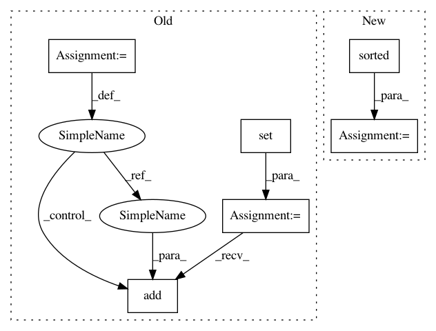

6229c419d8f1b63cac22f23f24e19ef28d89b0a3,src/python/pants/backend/graph_info/tasks/cloc.py,CountLinesOfCode,console_output,#CountLinesOfCode#Any#,34
Before Change
// TODO: Work out a nice library-like utility for writing an argfile, as this will be common.
with temporary_dir() as tmpdir:
list_file = os.path.join(tmpdir, "input_files_list")
input_files = set()
with open(list_file, "w") as list_file_out:
for target in targets:
for source in target.sources_relative_to_buildroot():
input_files.add(source)
list_file_out.write(source)
list_file_out.write(b"\n")
list_file_snapshot = self.context._scheduler.capture_snapshots((
PathGlobsAndRoot(
PathGlobs(("input_files_list",)),
str(tmpdir),
After Change
with temporary_dir() as tmpdir:
list_file = os.path.join(tmpdir, "input_files_list")
with open(list_file, "w") as list_file_out:
for input_file in sorted(input_files):
list_file_out.write(input_file)
list_file_out.write(b"\n")
list_file_snapshot = self.context._scheduler.capture_snapshots((
PathGlobsAndRoot(
PathGlobs(("input_files_list",)),
str(tmpdir),
In pattern: SUPERPATTERN
Frequency: 3
Non-data size: 6
Instances
Project Name: pantsbuild/pants
Commit Name: 6229c419d8f1b63cac22f23f24e19ef28d89b0a3
Time: 2018-06-27
Author: dawagner@gmail.com
File Name: src/python/pants/backend/graph_info/tasks/cloc.py
Class Name: CountLinesOfCode
Method Name: console_output
Project Name: huyingxi/Synonyms
Commit Name: 4a44eff88fe62c76183418e4ffd779f28b973ef3
Time: 2018-05-27
Author: hailiang.hl.wang@gmail.com
File Name: synonyms/synonyms.py
Class Name:
Method Name: _nearby_levenshtein_distance
Project Name: pantsbuild/pants
Commit Name: fea0351e92bf4f060371ad62907d26ef25c25a50
Time: 2014-10-10
Author: benjy@foursquare.com
File Name: src/python/pants/option/arg_splitter.py
Class Name: ArgSplitter
Method Name: __init__
Project Name: pantsbuild/pants
Commit Name: 6229c419d8f1b63cac22f23f24e19ef28d89b0a3
Time: 2018-06-27
Author: dawagner@gmail.com
File Name: src/python/pants/backend/graph_info/tasks/cloc.py
Class Name: CountLinesOfCode
Method Name: console_output